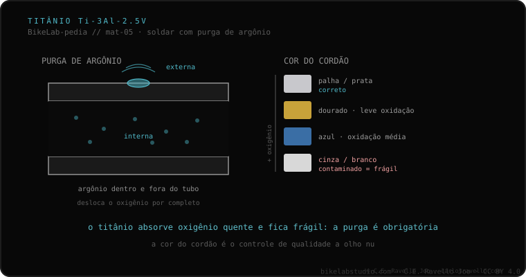

O titânio de quadros é grau 9 (Ti-3Al-2.5V: 3% de alumínio, 2,5% de vanádio). Solda-se com TIG, mas com uma exigência que o separa: é preciso purgar com argônio o interior e o exterior do tubo durante a solda. O titânio quente absorve oxigênio com avidez, e esse oxigênio fragiliza o cordão. O sinal é visual e direto: cordão bem protegido = palha ou prateado; azulado, cinza ou esbranquiçado = houve contaminação.
Se o seu quadro for de titânio, este é o dado que decide em que oficina ele deve ser tocado: não é qualquer uma.
O titânio de quadros é a liga grau 9, Ti-3Al-2.5V, com 3% de alumínio e 2,5% de vanádio. Solda-se com TIG, igual ao aço ou ao alumínio, mas com uma condição que o separa do resto: é preciso purgar com argônio tanto o interior quanto o exterior do tubo durante a solda. A razão é química: o titânio quente absorve oxigênio com avidez, e esse oxigênio fragiliza o cordão. Se o ar chega ao metal quente, a união fica quebradiça por dentro mesmo que por fora pareça sólida.
A boa notícia é que o titânio avisa. Há um sinal visual direto na cor do cordão: bem protegido fica cor de palha ou prateado; se ficar azulado, cinza ou esbranquiçado, houve contaminação por falta de gás inerte. Por isso o titânio não se trabalha em qualquer oficina: exige o equipamento de purga e a mão para consegui-lo.

Saber ler a cor do cordão é uma das perguntas-chave a fazer ao soldador: a purga de gás inerte é imprescindível no titânio e sua ausência produz a fragilização descrita. Encaixa também com o que ocorre na zona afetada pelo calor e com a diferença geral entre fundir o tubo ou uni-lo sem fundi-lo (TIG e brazing). O titânio funde-se, como o aço, mas com essa exigência de proteção que nenhum outro material do cluster impõe com tanta dureza.
Se tiver dúvidas sobre o estado de um cordão ou sobre quem deve tocá-lo, mande o caso. Diagnóstico real, sem vender nada. Fale conosco no WhatsApp
O titânio de quadros é grau 9, a liga Ti-3Al-2.5V, com 3% de alumínio e 2,5% de vanádio. Solda-se com TIG, mas exige purgar com argônio o interior e o exterior do tubo durante a solda.
O titânio quente absorve oxigênio com avidez, e esse oxigênio fragiliza o cordão. Por isso é preciso isolar a zona quente do ar, purgando com argônio o interior e o exterior do tubo durante a solda.
Pela cor: bem protegido fica cor de palha ou prateado. Se ficar azulado, cinza ou esbranquiçado, houve contaminação por falta de gás inerte. Por isso o titânio não se trabalha em qualquer oficina: exige o equipamento de purga e a mão.